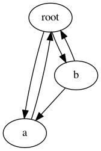

copy – Duplicate objects¶
| Purpose: | Provides functions for duplicating objects using shallow or deep copy semantics. |
|---|---|
| Available In: | 1.4 |
The copy module includes 2 functions, copy() and deepcopy(), for duplicating existing objects.
Shallow Copies¶
The shallow copy created by copy() is a new container populated with references to the contents of the original object. For example, a new list is constructed and the elements of the original list are appended to it.
import copy
class MyClass:
def __init__(self, name):
self.name = name
def __cmp__(self, other):
return cmp(self.name, other.name)
a = MyClass('a')
l = [ a ]
dup = copy.copy(l)
print 'l :', l
print 'dup:', dup
print 'dup is l:', (dup is l)
print 'dup == l:', (dup == l)
print 'dup[0] is l[0]:', (dup[0] is l[0])
print 'dup[0] == l[0]:', (dup[0] == l[0])
For a shallow copy, the MyClass instance is not duplicated so the reference in the dup list is to the same object that is in the l list.
$ python copy_shallow.py
l : [<__main__.MyClass instance at 0x100467d88>]
dup: [<__main__.MyClass instance at 0x100467d88>]
dup is l: False
dup == l: True
dup[0] is l[0]: True
dup[0] == l[0]: True
Deep Copies¶
The deep copy created by deepcopy() is a new container populated with copies of the contents of the original object. For example, a new list is constructed and the elements of the original list are copied, then the copies are appended to the new list.
By replacing the call to copy() with deepcopy(), the difference becomes apparent.
dup = copy.deepcopy(l)
Notice that the first element of the list is no longer the same object reference, but the two objects still evaluate as being equal.
$ python copy_deep.py
l : [<__main__.MyClass instance at 0x100467d88>]
dup: [<__main__.MyClass instance at 0x100467dd0>]
dup is l: False
dup == l: True
dup[0] is l[0]: False
dup[0] == l[0]: True
Controlling Copy Behavior¶
It is possible to control how copies are made using the __copy__ and __deepcopy__ hooks.
- __copy__() is called without any arguments and should return a shallow copy of the object.
- __deepcopy__() is called with a memo dictionary, and should return a deep copy of the object. Any member attributes that need to be deep-copied should be passed to copy.deepcopy(), along with the memo dictionary, to control for recursion (see below).
This example illustrates how the methods are called:
import copy
class MyClass:
def __init__(self, name):
self.name = name
def __cmp__(self, other):
return cmp(self.name, other.name)
def __copy__(self):
print '__copy__()'
return MyClass(self.name)
def __deepcopy__(self, memo):
print '__deepcopy__(%s)' % str(memo)
return MyClass(copy.deepcopy(self.name, memo))
a = MyClass('a')
sc = copy.copy(a)
dc = copy.deepcopy(a)
$ python copy_hooks.py
__copy__()
__deepcopy__({})
Recursion in Deep Copy¶
To avoid problems with duplicating recursive data structures, deepcopy() uses a dictionary to track objects that have already been copied. This dictionary is passed to the __deepcopy__() method so it can be used there as well.
This example shows how an interconnected data structure such as a Digraph might assist with protecting against recursion by implementing a __deepcopy__() method. This particular example is just for illustration purposes, since the default implementation of deepcopy() already handles the recursion cases correctly.
import copy
import pprint
class Graph:
def __init__(self, name, connections):
self.name = name
self.connections = connections
def addConnection(self, other):
self.connections.append(other)
def __repr__(self):
return '<Graph(%s) id=%s>' % (self.name, id(self))
def __deepcopy__(self, memo):
print
print repr(self)
not_there = []
existing = memo.get(self, not_there)
if existing is not not_there:
print ' ALREADY COPIED TO', repr(existing)
return existing
pprint.pprint(memo, indent=4, width=40)
dup = Graph(copy.deepcopy(self.name, memo), [])
print ' COPYING TO', repr(dup)
memo[self] = dup
for c in self.connections:
dup.addConnection(copy.deepcopy(c, memo))
return dup
root = Graph('root', [])
a = Graph('a', [root])
b = Graph('b', [a, root])
root.addConnection(a)
root.addConnection(b)
dup = copy.deepcopy(root)
First, some basic directed graph methods: A graph can be initialized with a name and a list of existing nodes to which it is connected. The addConnection() method is used to set up bi-directional connections. It is also used by the deepcopy operator.
The __deepcopy__() method prints messages to show how it is called, and manages the memo dictionary contents as needed. Instead of copying the connection list wholesale, it creates a new list and appends copies of the individual connections to it. That ensures that the memo dictionary is updated as each new node is duplicated, and avoids recursion issues or extra copies of nodes. As before, it returns the copied object when it is done.
Next we can set up a graph with a nodes root, a, and b. The graph looks like:

There are several cycles in the graph, but by handling the recursion with the memo dictionary we can avoid having the traversal cause a stack overflow error. When the root node is copied, we see:
$ python copy_recursion.py
<Graph(root) id=4299639696>
{ }
COPYING TO <Graph(root) id=4299640056>
<Graph(a) id=4299639768>
{ <Graph(root) id=4299639696>: <Graph(root) id=4299640056>,
4298517936: ['root'],
4299576592: 'root'}
COPYING TO <Graph(a) id=4299640128>
<Graph(root) id=4299639696>
ALREADY COPIED TO <Graph(root) id=4299640056>
<Graph(b) id=4299639840>
{ <Graph(root) id=4299639696>: <Graph(root) id=4299640056>,
<Graph(a) id=4299639768>: <Graph(a) id=4299640128>,
4297844216: 'a',
4298517936: [ 'root',
'a',
<Graph(root) id=4299639696>,
<Graph(a) id=4299639768>],
4299576592: 'root',
4299639696: <Graph(root) id=4299640056>,
4299639768: <Graph(a) id=4299640128>}
COPYING TO <Graph(b) id=4299640632>
The second time the root node is encountered, while the a node is being copied, __deepcopy__ detects the recursion and re-uses the existing value from the memo dictionary instead of creating a new object.
See also
- copy
- The standard library documentation for this module.